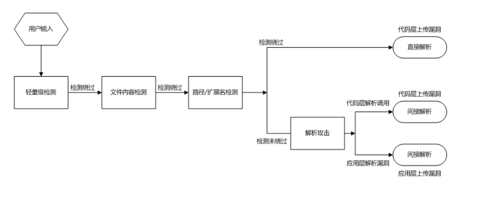
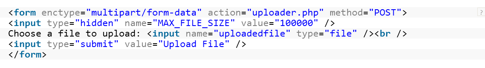
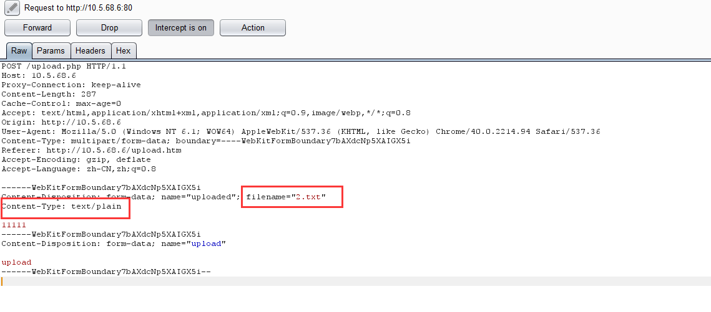
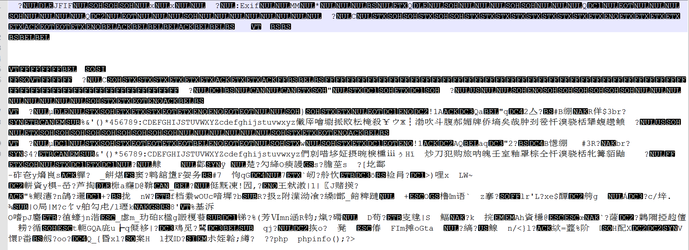
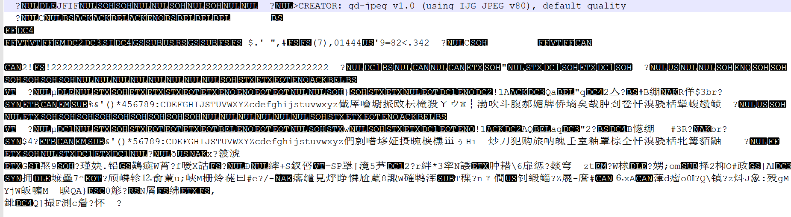

1、因为有需求
为了让最终用户将文件上传到您的网站，就像是给危及您的服务器的恶意用户打开了另一扇门。即便如此，在今天的现代互联网的Web应用程序，它是一种常见的要求，因为它有助于提高您的业务效率。 在Facebook和Twitter等社交网络的Web应用程序，允许文件上传。也让他们在博客，论坛，电子银行网站，YouTube和企业支持门户，给机会给最终用户与企业员工有效地共享文件。允许用户上传图片，视频，头像和许多其他类型的文件。
2、上传流程校验不完整
文件上传校验完整流程如下:

1、客户端JS校验
一般校验的内容有文件大小（通过隐藏表单或者计算获取文件体积大小）、文件的后缀名、文件类型(content-type)
优点：不需要消耗服务器资源
缺点：很容易被绕过，使用代理(burp suite、fiddler)、自定义报文发送(使用nc等工具)
2、服务端校验
- 1)校验文件大小，免得拒绝服务攻击
千万不要使用隐藏表单获取文件大小，因为隐藏表单数值可以在客户端被篡改，应该使用服务器端计算得出文件大小

- 2)文件类型
一般校验文件类型有两种
I、Mime类型验证，获取content-type，判断是否为允许类型
php中的 $_FILES[‘uploaded’][‘type’]; 就是基于这个原理实现，缺点是攻击者可以篡改content-type内容，实现绕过
II、使用 getimagesize 函数校验文件头部内容
当仅允许上传图片的时候, 开发者通常使用 PHP 的 getimagesize 函数来检测图片的头部信息. 该函数在被调用时将会返回图片的尺寸, 如果图片经验证为无效的, 也就是说图片头部信息不正确, 则会返回 false 值. 因此一个开发者一般会检查该函数是否返回 true 或 false, 并且通过该信息来验证上传的文件. 所以, 如果一个恶意用户试着上传一个内嵌有简单 PHP shell 的 jpg 文件的话, 该函数会返回 false 然后他将不允许上传此文件. 然而, 即使这种方式也能被很容易的绕过. 如果一个图片在一个图片编辑器内打开, 就如 Gimp, 用户就可以编辑图片的注释区, 那儿就能插入 PHP 代码。该图片仍然有一个有效的头部; 因此就绕过了 getimagesize 函数的检查
- 3)校验文件扩展名
服务端一般从文件名中右至左得到第一个.后面的内容为扩展名，不过攻击者可以通过代理伪造扩展名实现绕过
- 4)重新渲染生成新的图片
php 一般使用imagecreatefromjpeg()函数在上传的图片文件基础上从新渲染、裁剪生成一个新的图片文件（一般的头像上传都会经过裁剪处理），从而会擦除一些嵌入在图片注释等地方的恶意代码
如果上传的不是真正的图片文件，或者文件格式不是jpeg，则imagecreatefromjpeg()生成图片失败
- 5)通过.htaccess保护上传文件夹
另一种流行的穿件安全的文件上传表单的方法是适用.htaccess保护好上传文件存放的文件夹。办法是限制这个文件夹里的脚本文件的执行。这种情形一下，一个.htaccess文件一般包含下面的代码：
AddHandler cgi-script .php .php3 .php4 .phtml .pl .py .jsp .asp .htm .shtml .sh .cgi
Options –ExecCGI
上面的是另一种形式的黑名单，本身并不是很安全。在PHP手册中，move_uploaded_file一章中，有一个warning:若目标文件已经存在，则会覆盖原文件。
因为上传的文件能够而且会覆盖已经存在的同名文件，一个恶意用户很轻易就能用他自己修改过的.htaccess替换掉原来的。这使得他可以执行特定的将会帮助他危害服务器的脚本。
1、隐藏上传目录的路径
2、不要依赖客户端的校验，因为客户端的校验是脆弱的
3、服务器端口不但要校验文件大小、类型、后缀名，还要校验文件内容
4、上传的目录不要有执行权限
5、上传后的文件要自动重命名(为了防止一些web server的解析漏洞 如xxx.php.jk 有些请款下会被当成php解析 xxx.asp;.jpg会被当成asp解析)
生成一个随机的文件名，并且加上此前生成的文件扩展名
6、使用白名单，而不要使用黑名单
创建一个mime-type白名单列表。(只允许这个列表里的Mime-type)
黑名单不可能罗列完整(如果忘了限制.htaccess)，恶意用户可以很容易地绕过该检查上传一个文件名为“.htaccess”，其中包含类似于下面的一行代码：
AddType application/x-httpd-php .jpg
7、可以重新生成裁剪后的图片文件存入数据库
8、文件路径检验（避免0x00截断，目录遍历）
9、注意操作系统bt特性（windows系统会自动去掉文件名最后面的点和空格），0x00截断，服务器文件解析漏洞
10、千万不要执行了move_uploaded_file 函数将上传文件移动至保存目录在进行 内容校验、自动重命名等操作，一定要做完所有校验后在调用move_uploaded_file 函数将文件移动至保存目录
11、尽量用AddType 而不用AddHandler
AddType 表示后缀名为xxx；AddHandler表示名字中含有后缀xxx
AddHandler php5-script .php 表示文件名中含有.php则按照php类型解析
如果一个恶意攻击者上传一个双扩展名的文件如20.php.jpg 则可能导致恶意代码被执行
12、 定义一个.htaccess文件，只允许访问指定扩展名的文件
不要把.htaccess文件和上传文件放在同一个目录里，应该放在父目录里:
deny from all
<Files ~ "^\\w+\\.(gif|jpe?g|png)$">
order deny,allow
allow from all
<\/Files>
1、如何知道服务器是否对上传的图片进行内容渲染处理
上传一个图片文件，然后下载， 查看其16进制内容，如有：gd-jpeg v1.0 (using IJG JPEG v62)，则表示被GD库函数处理过，表示图片内容被核查过
处理前：
处理后：

2、如何绕过js客户端校验
一般应对措施：
- 1)禁用js、比如firebug
- 2)修改源文件后缀，使用本地代理再修改为原来后缀
3、如何合成图片马
- 1)可以使用copy命令或者使用c32asm这个软件。
- 2)使用在线图片马生成工具
- 3)可以在图片的exif中写入后门代码
- 4)使用gimp在注释中加入后门代码
4、如何绕过php 图片处理函数(如GD库的处理)对图片的处理(比如合法格式判断，内容转化等)
上传2张图片，然后下载下来，做比较，发现哪些经过处理之后还没有改变，然后就把图片马插入到那里可以尝试不同的图片格式(jpeg不行就换gif试试)上传
强烈推荐 细看 Upload_Attack_Framework.pdf.